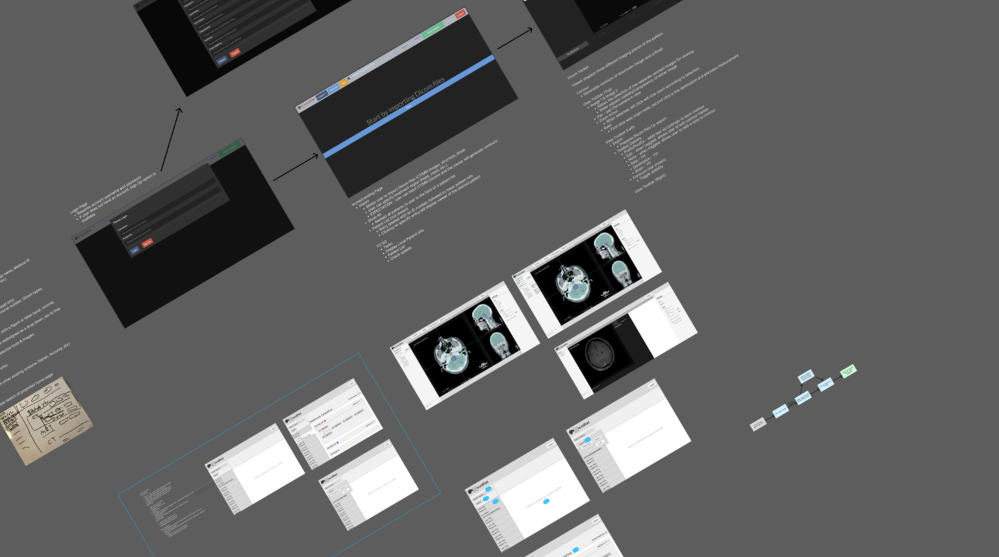
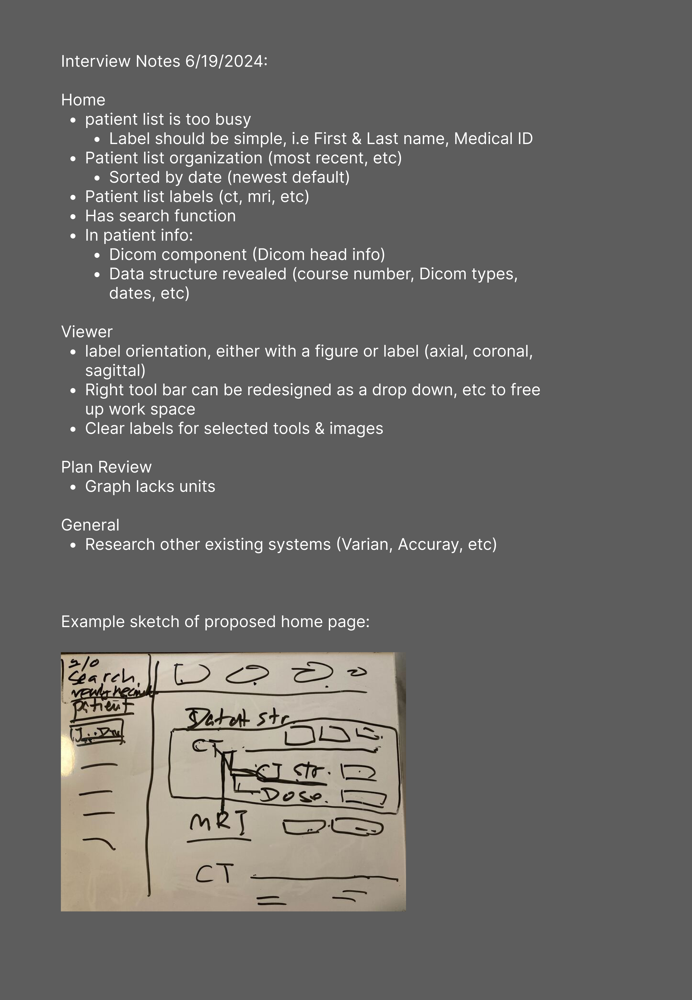
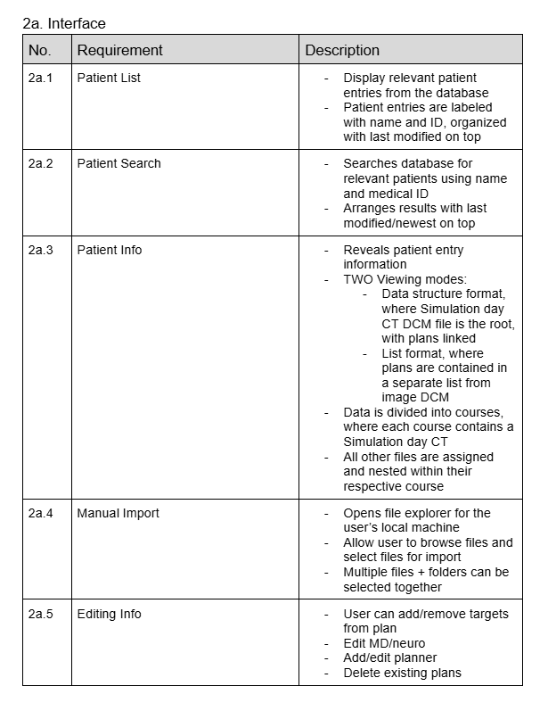

Left: An example of interview notes, along with a whiteboard sketch by the interviewee.


AI Assisted Treatment Planning Software
Designing an intuitive interface for revolutionary metastatic cancer treatment tools.
Treatment planning for metastatic brain cancer is a complex and thorough process that involves an entire team of physicians. However, with the help of AI assisted tools, tasks such as segmentation can be automated, greatly reducing the work load for these physicians. My task was to understand the work flow of these doctors, then design an interface that meets the desired requirements from my research.
Initial Research
The challenge to this project was understanding the various complex workflows of the physicians. I spent some time doing my own research to get up to speed with the technical terminology, common processes, and tech the physicians worked with, as well as meeting with physicians at Stanford to get a crash course on how their treatment process works. I also worked closely with the team at NeuralRad to understand how their AI driven tools worked and how they would benefit physicians.
Following my initial familiarization to the field, I began the research process of understanding the physicians and their workflow.
Interviewing
A great part of my research involved interviewing various physicians and researchers to understand their general workflow, and how the tools being developed by NeuralRad may benefit them. This involved a series of interviews with physicians at Stanford and UT Southwestern. During these interviews, I kept my questioning pattern and phrasing open ended, and made sure to record the interviewee's response in detail. These responses were compiled and recorded on a user requirements document, that combined the needs and expectations for each feature incorporated in NeuralRad's treatment planning software (TPS).
When interviewing physicians about the design of existing interfaces, would have them share their screen as well to observe how they performed certain actions, as well as visually understand where confusion often occurred. In some scenarios, it was also helpful to have the interviewee sketch their ideas or troubles on a whiteboard.


Left: An example of interview notes, along with a whiteboard sketch by the interviewee.
Right: One section of compiled results from all the interview notes describing expected functionality in detail.
I also performed a competitive analysis of NeuralRad's web app to other treatment planning software. Although NeuralRad's product is the first of it's kind, it still requires and lacks many features that similar competing software has from a treatment planning perspective. The two software I researched was MiMs and Varian:
A complete suite of TPS tools
- Contouring, dosage maps, segmentation bump editing, etc.
- Better organization of patient data
- Organized lists that allowed for a more orderly view of all files
- Icons + labels that were more descriptive and communicative
- Color coded labels/features that were easier to follow + work with
- Overall leaner design, but still communicative and informational
Analysis
Following the interviewing and researching process, as well as reflecting on my notes and compiled documents, I was able to come to a number of conclusions about the existing experience of NeuralRad's software as well as expectations.
The existing interface was difficult to use.
- Many labels were out of order or not identified properly.
- The ordering of patient entries and functions was not intuitive
- Functions themselves had no description and were unintuitive.
- Basic features necessary for treatment planning were lacking and/or missing (axis labels, contour editing, fusing/organization, etc.)
- The database lacked an interface.
- Information displays were unintuitive and confusing, they were also often unnecessary.
Further observation of physicians using the web app emphasized and visualized these complaints, illustrating that many expectations in the interaction and organization of the information/tools displayed was generally disorganized and unintuitive. Combined with the research of what does work well through the existing platforms, I began to think of possibilities to redesign and adapt the interface into something more user friendly and intuitive.
Synthesis
As there were a multitude of complex requirements, I began by creating a user requirements document that listed and described in detail all the features that would be required in each page. I also created user flow charts that detailed the order of operations in a typical treatment planning session, describing how the software is used in every step of the process.
Example of a work flow chart, specifically regarding databse access.
Given this information, I then recreated the web app in Figma. As the software's purpose was for internal treatment use, I focused on the usability and intuitiveness rather than visual aesthetics. The design palette was kept simple and basic for easier understanding and cleaner organization.
My initial designs focused on implementing the features that the physicians needed for treatment planning. These included dosage tracking maps, labels and tools in the imaging viewers, and clear buttons + menus that depicted sets of tools that would need to be implemented. From an interface refinement perspective, I focused on improving clarity, such as changing the word choice in labels, improving the layout and order of information, and giving certain features color codes for enhanced clarity.
The Figma Prototypes
Upon completing my initial set of lo-fi designs, I presented them to the physicians to receive feedback on functionality and have them perform some basic user tests in Figma. While the implemented features were appreciated, I was informed that my new designs also did not meet their requirements, as many of the labels were deemed inaccurate or too simple/undescriptive. I also found that I had various misunderstandings in how the interface for the patient database was used, and thus, did another cycle of research for learning about the patient database in use by the physicians. This required a discussion with both the engineers at NeuralRad and Stanford to settle details on what the requirements were for file and data storage, and the functionality that would be necessary.
In my next iteration of designs, I focused more on what the physicians felt was intuitive about the existing software I researched, and attempted to adapt these features. Such ideas included greater usage of organized/ordered lists, icons, and concise descriptions. I also created variations of these designs, to try and receive feedback on which layouts would be user friendly. Again, these designs would all be created in Figma, and they followed a very similar design palette to my initial designs.